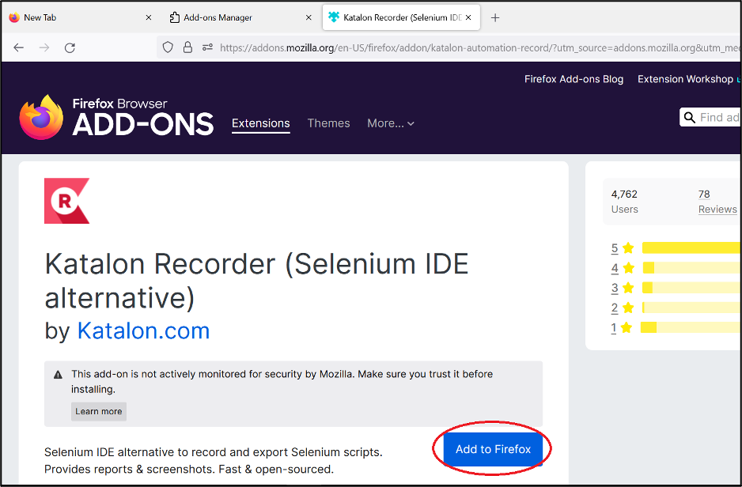

This week we will learn how to automate testing.
Objectives
By the end of the week, each student will be able to:
- Appreciate how testing automation tools enable testers to more effectively test a product.
- Understand how testing automation tools work.
- Automate testing using testing automation software.
Plan of the Week
This week, we will complete the following activities:
- Reading: Read about the Selenium automation software and install it on your computer.
- Create Automation: Using Selenium, create automation to perform a dozen tests.
- Demonstration: Create a video demonstrating your automation.
Install Katalon Browser Plug-In (Google Chrome)
Add the Katalon IDE plug in.
Go to Chrome’s web store and select Katalon IDE.
Add the Katalon IDE extension, by selecting Add to Chrome.
Agree to the permissions, by clicking Add Extension:
Install Katalon Browser Plug-In (Microsoft Edge)
Add the Katalon IDE plug in.
Go to Edge’s web store and select Katalon IDE.
Add the Katalon IDE extension, by selecting Get.
Agree to the permissions, by clicking Add Extension:
Install Katalon Browser Plug-In (Firefox)
Add the Katalon IDE Plugin
Go to Firefox’s web store and select Katalon IDE
Add the Katalon IDE extension, by selecting Add to Firefox.

Agree to the permissions, by clicking Add:
Install Katalon with an IDE
You can use Katalon with any IDE. We currently developed a lab tutorial on how to use and install Katalon with Visual Studio Community (this is not VS Code) on a PC using Python.